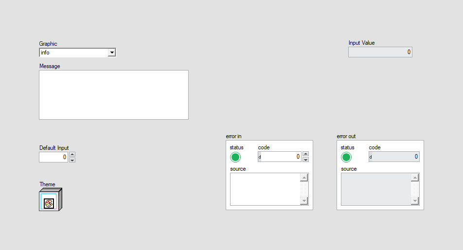
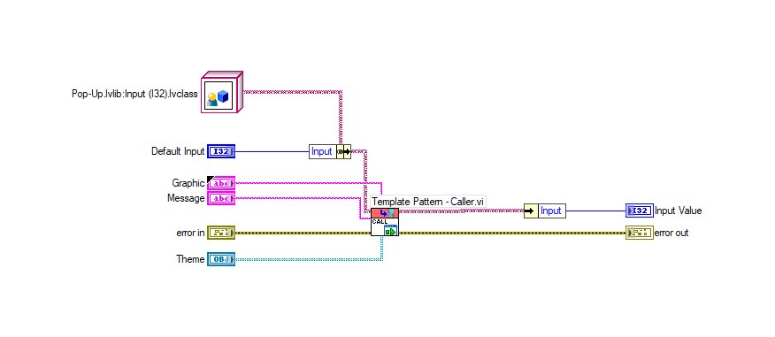
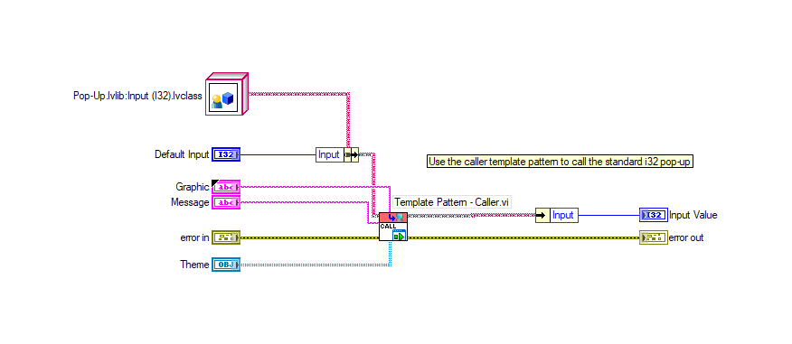
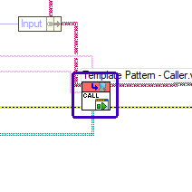
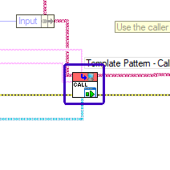
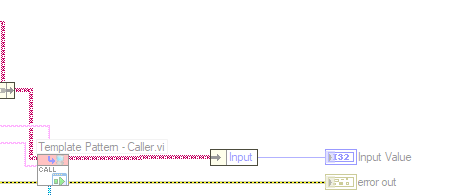
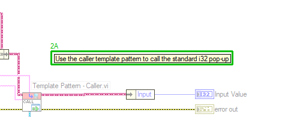

LabVIEW VI Comparison Report
7/13/2026 7:48:08 PM
First VI: C:\workspace-base\Standard\Input (I32)\Display Input (I32) Popup.viSecond VI: C:\workspace\Standard\Input (I32)\Display Input (I32) Popup.vi
| Front Panel Overview | ||

|
 | |
| Block Diagram Overview | ||
|
 |
 |
- Front Panel
- Front Panel Position/Size
- Block Diagram Functional
- Block Diagram Cosmetic
- VI Attribute
Detailed Information
1. Block Diagram objects
| C:\workspace-base\Standard\Input (I32)\Display Input (I32) Popup.vi | C:\workspace\Standard\Input (I32)\Display Input (I32) Popup.vi | |
|
 |
 |
- Name Label - moved : changed from "(40,177)" to "(56,173)"
2. Block Diagram objects
| C:\workspace-base\Standard\Input (I32)\Display Input (I32) Popup.vi | C:\workspace\Standard\Input (I32)\Display Input (I32) Popup.vi | |
|
 |
 |
- Label - added at (94,128)
3. VI Attribute - Documentation (VI Properties)
- description text : changed from "The input (I32) popup will display information to the user and wait for the operator to enter a value and click the button. Note: The function Close Pop-Up (I32).vi can be used to send a value when closing this dialog. Otherwise, use Close Pop-Up.vi to close it early. Inputs: -Graphic [typedef combobox] - Image (PNG) for Graphic for Popup -Message [String] - String Variable to populate Display -Theme [lvclass] - the theme for the style of the popup -Default Input [I32] - default value for the prompt Outputs -Input Value [I32] - the user's entered data Code Developed By: Daniel Coons Technology Service Corporation 1983 S Liberty Drive Bloomington, IN 47403 Phone: 812 558-7100 daniel.coons@tsc.com www.tsc.com/atcs" to "The input (I32) popup will display information to the user and wait for the operator to enter a value and click the button. Note: The function Close Pop-Up (I32).vi can be used to send a value when closing this dialog. Otherwise, use Close Pop-Up.vi to close it early. Inputs: + -Graphic [typedef combobox] - Image (PNG) for Graphic for Popup + -Message [String] - String Variable to populate Display + -Theme [lvclass] - the theme for the style of the popup + -Default Input [I32] - default value for the prompt + Outputs: + -Input Value [I32] - the user's entered data Code Developed By: + Daniel Coons + https://github.com/danielcoons/tsc-pop-up"
4. VI Attribute - Execution (VI Properties)
- Allow Debugging : changed from "enabled" to "disabled"